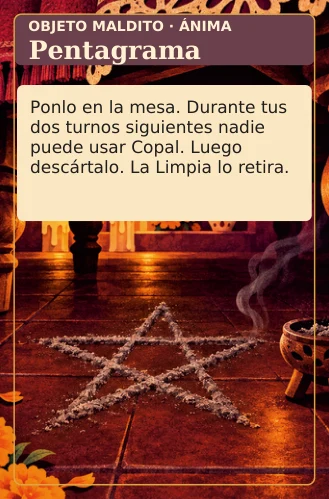
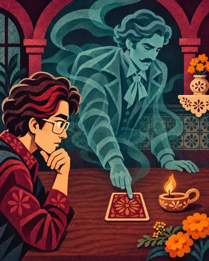

pentagramaPentagrama

Durante tus 2 siguientes turnos nadie puede usar Copal.
Trabajo pendiente. Crear el arte a partir del concepto que defina Jonathan.
Estado de las piezas del juego. Los conteos corresponden a diseños distintos, independientemente de sus copias físicas.
111 diseños en el catálogo.
pentagrama
Durante tus 2 siguientes turnos nadie puede usar Copal.
Trabajo pendiente. Crear el arte a partir del concepto que defina Jonathan.
rol_vigiaCuando una carta o habilidad del ánima te haga descartar al azar, eliges tú qué cartas descartas; si te hace cambiar toda la mano, conservas 1.
Trabajo pendiente. Componer el marco y la leyenda. Ver ilustración aprobada.
rol_improvisadorAl improvisar con 2 cartas detectas con 4 o más, como una herramienta. También puedes improvisar con 1 sola carta: detectas con 5 o 6.
Trabajo pendiente. Componer el marco y la leyenda. Ver ilustración aprobada.
rol_tecnicoCuando una herramienta tuya da «Nada», puedes repetir el dado pagando 1 de cordura. Una repetición por herramienta, en cada herramienta que uses. También bajo el vaso.
Trabajo pendiente. Componer el marco y la leyenda. Ver ilustración aprobada.
rol_detectiveUna vez por partida, cuando confirmes una evidencia, pregunta en voz alta por otra y el ánima responde si la tiene. En Sálvese quien pueda, solo responde si sacas 4 o más. Es una pista: no cuenta para acusar.
Trabajo pendiente. Componer el marco y la leyenda. Ver ilustración aprobada.
rol_curanderoTu Té de tila cura 3 y puedes dárselo a otro investigador.
Trabajo pendiente. Componer el marco y la leyenda. Ver ilustración aprobada.
rol_devotaTu Rosario puede salvar a otro investigador cazado, o cancelar como Copal una carta del ánima que no sea un Espanto.
Trabajo pendiente. Componer el marco y la leyenda. Ver ilustración aprobada.
rol_sensitivoLa primera vez que el ánima revele una habilidad, sabes si es la verdadera o la falsa. Es una pista: no cuenta para acusar.
Trabajo pendiente. Componer el marco y la leyenda. Ver ilustración aprobada.
rol_guardaespaldasUna vez por partida, cuando cazan a alguien sin defensa, eliges: te pones frente a otro (pierdes 2 de cordura y la cacería se detiene) o, si te cazan a ti, aguantas el golpe y te quedas sin cordura. Necesitas 2 o más.
Trabajo pendiente. Componer el marco y la leyenda. Ver ilustración aprobada.
rol_velarCarta de espíritu. Ponla frente a un vivo: hasta tu siguiente turno, pierde 1 menos de cordura cada vez que el ánima lo dañe. En Sálvese quien pueda, marca a tu aliado.
Trabajo pendiente. Comparar la escena actual con la alternativa y seleccionar la ilustración.
rol_manifestar
Carta de espíritu. En tu turno, roba 1 carta: si es una herramienta, detecta con 5 o 6. Cualquier otra carta se descarta.
Trabajo pendiente. Componer el marco y registrar la carta terminada.
corduraEscala de 10 a 0 con un clip, una por investigador.
Trabajo pendiente. Preparar la ilustración y componer la escala con la plantilla.
18 diseños en el catálogo.
rol_reversoIdentifica por detrás el grupo de cartas «Roles».
Trabajo pendiente. Revisar y registrar la versión final del reverso.
rol_reverso_grisIdentifica por detrás el grupo de cartas «Rol usado (alternativo)».
Trabajo pendiente. Revisar y registrar la versión final del reverso.
espiritu_reversoIdentifica por detrás el grupo de cartas «Espíritus».
Trabajo pendiente. Revisar y registrar la versión final del reverso.